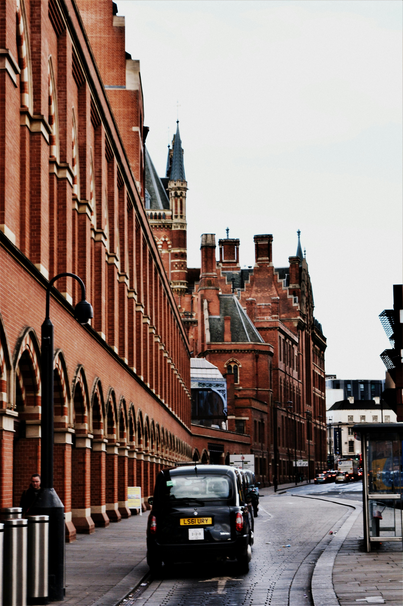
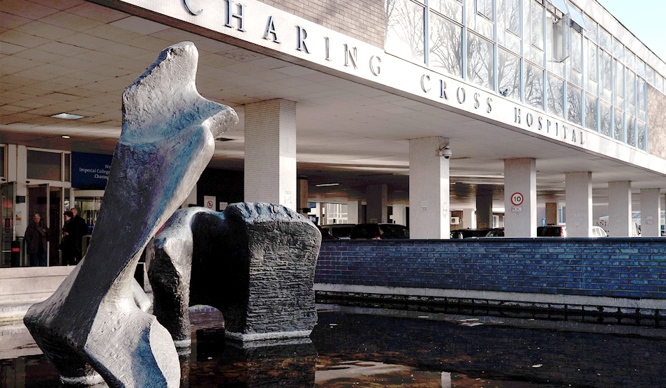
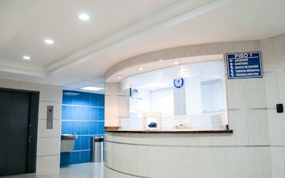
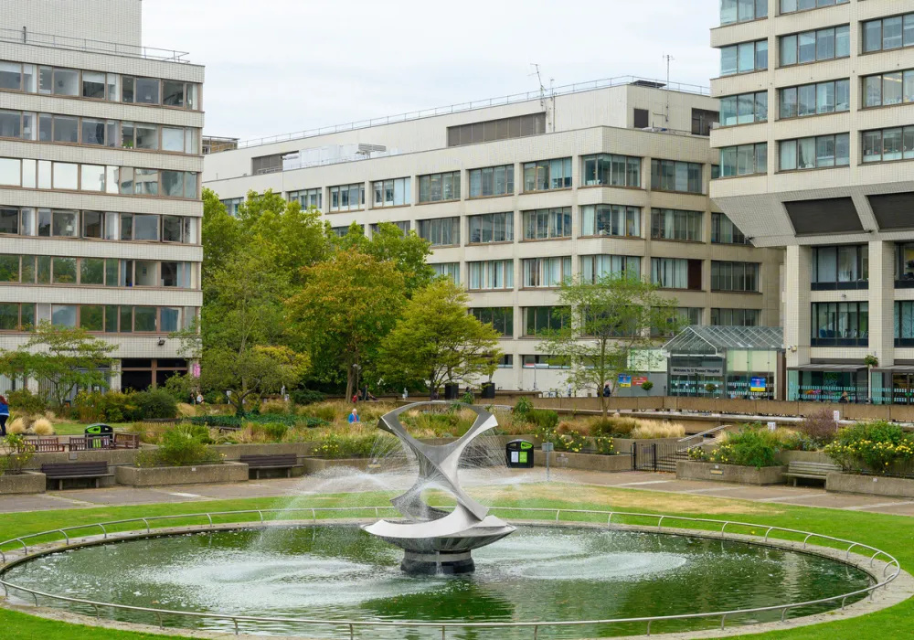

DUAL GUARANTEE SYSTEM
双重保障体系
独创"一位专属私人医生 + 3,200+全球专家后援团"的双重保障体系

专属私人医生
英国皇室级私人医生服务，一对一专属健康管理，从日常守护到疑难重症，全程陪伴您的健康之路。
1 : 1

全球专家后援团
覆盖45个专科的3,200+全球顶级专家资源，随时为您的健康问题提供多学科会诊和权威意见。
3,200+
圣链健康 · 连接中英顶级医疗资源
一位专属私人医生 + 3,200+全球专家后援团
严选英国前10%顶级医生，覆盖45个专科

圣链健康成立于2019年，以伦敦、北京双总部模式运营。我们与英国牛津大学、剑桥大学医学院、帝国理工医学院、HCA医疗集团等世界顶级机构展开深度合作，为高品质医疗资源搭建共享桥梁。
秉承"找对人，更健康"的理念，我们将英国皇室私人医生模式与中国家庭健康需求深度融合，独创"一位专属私人医生 + 3,200+全球专家后援团"的双重保障体系。
与英国最顶尖的医学机构和医疗集团深度合作，为您提供最权威的医疗资源保障
从个性化健康管理到全球顶级医疗资源对接，为每一个家庭提供全周期、主动式、定制化的健康守护
独创"一位专属私人医生 + 3,200+全球专家后援团"的双重保障体系
英国皇室级私人医生服务，一对一专属健康管理，从日常守护到疑难重症，全程陪伴您的健康之路。
覆盖45个专科的3,200+全球顶级专家资源，随时为您的健康问题提供多学科会诊和权威意见。
每一位入选医生均经过五重严格筛选，确保只为您推荐英国前10%的顶级医疗专家
始于业内同行认可，确保候选医生在专业领域内具有卓越声誉
由执业医生进行专业提名，从医学专业角度评估候选医生资质
第三方咨询公司进行深度背景核查，全方位验证医生执业记录
各领域国际知名医生组成"临床领袖委员会"最终审核
通过全部审核流程，正式成为圣链健康严选顶级医生
精选英国最负盛名的医院，为您提供世界一流的医疗服务

NHS 顶级帝国理工医疗集团旗下旗舰医院，在多个专科领域处于英国领先地位。

癌症权威世界著名的癌症专科医院，英国癌症治疗与研究领域的标杆机构。

心血管权威伦敦最古老的医院之一，拥有英国顶尖的心血管中心和肾脏医学部门。
每一个成功案例背后，都是我们对医疗品质的执着追求
国内诊断晚期肺癌，通过圣链健康对接Royal Marsden医院顶级肿瘤团队，获得全新治疗方案。
复杂冠心病需要高难度手术，经St Thomas'医院心血管中心专家远程评估后赴英手术。
帕金森病长期用药效果不佳，通过远程问诊获得Charing Cross医院神经科专家精准调药方案。